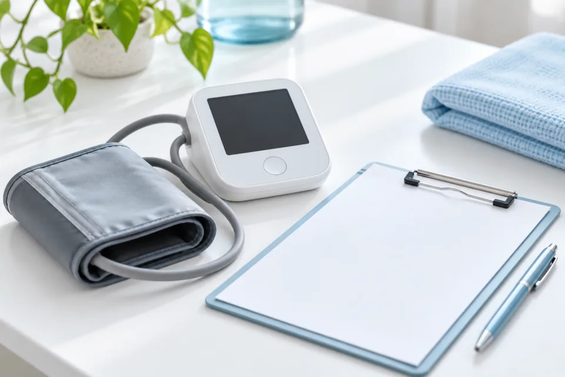
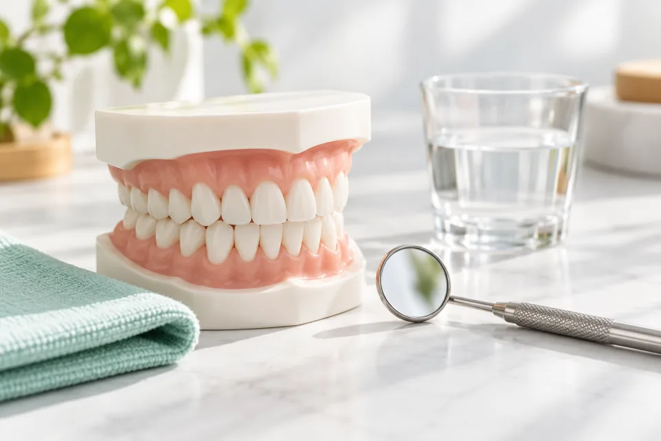
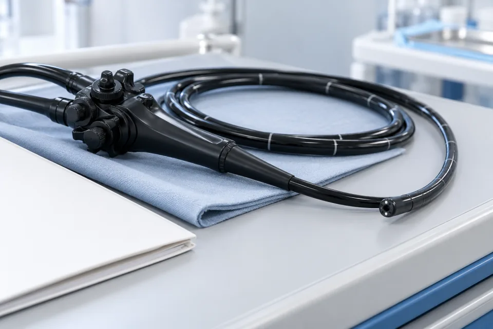
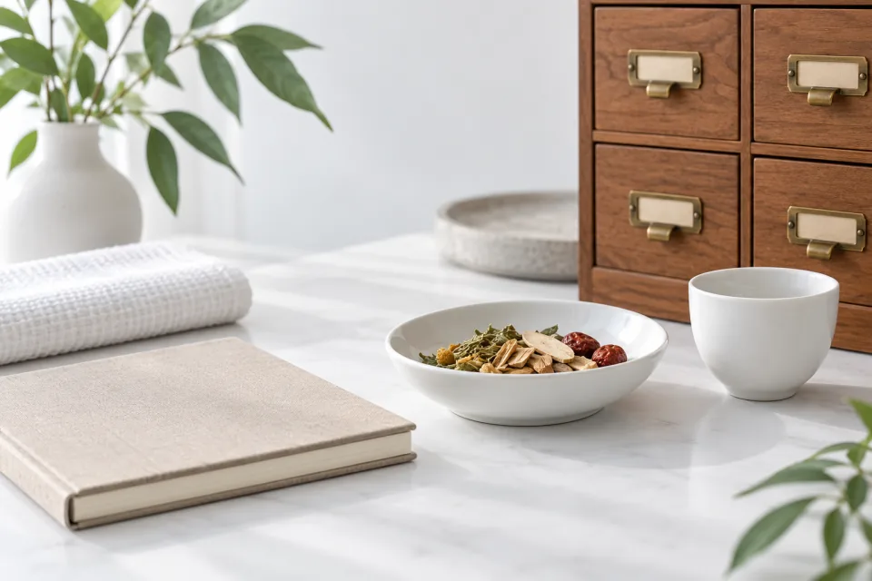
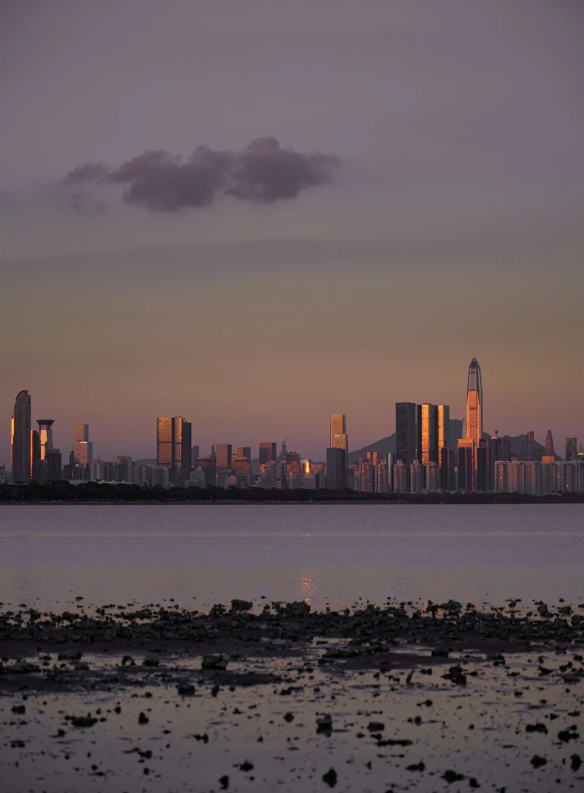

Hospital Appointment Coordination
Registration, availability and appointment communication.

IntersectionMed · Shenzhen, China
Hospital appointments, English-Chinese interpretation and in-person assistance for international visitors planning a healthcare visit.
Healthcare coordination, not a hospital. Usually within 1-2 business days.
What we coordinate
Registration, availability and appointment communication.
Language support for conversations with the care team.
Accompaniment and navigation on the day of your visit.
Visit timing, local travel planning and report handover.
Three core visit types

Appointments, language support and report handover.

Assessment, cleaning and dentist-confirmed basic care.

Consultation, gastroscopy and colonoscopy coordination.
AI-generated service illustrations, not photographs of partner facilities.

Optional consultation
Provider-led consultations and initial assessments.
Explore consultation support →AI-generated illustration, not a partner clinic.
How it works
Visit · Dates · Language
Availability · Scope · Fees
Interpretation · Navigation · Report handover
Clear support. Clear responsibilities.
Bring appointment, language and practical planning questions together.
English-Chinese support, with clinical decisions kept with your care team.
Discuss availability, support scope and coordination fees before confirming.

The destination
Beside Hong Kong. A waterfront base for a carefully planned visit.
Discover ShenzhenAsk us to check with the provider. Reports, further tests, treatment or follow-up may require more time; a short visit does not mean completed care.
Not yet. Confirm appointment timing, preparation and any travel restrictions with the provider before fixing travel.
Share your dates and support needs. We discuss coordination fees; hospital and travel charges are confirmed separately.
No. We provide coordination and patient support for planned visits. Licensed institutions provide care. For emergencies, contact local emergency services or an appropriate medical facility.
IntersectionMed is not a hospital or healthcare provider and does not provide medical diagnosis, treatment, or medical advice. Medical decisions are made solely by licensed physicians and healthcare institutions.
Start with your questions
Share your dates and support needs. Discuss scope and fees before confirming.
Usually within 1-2 business days. No detailed medical records needed for an initial inquiry.